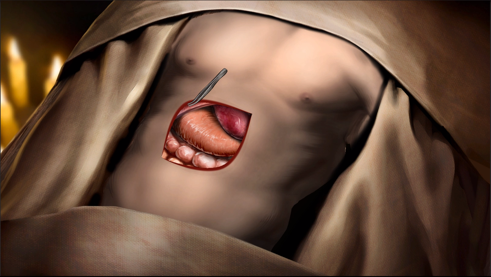
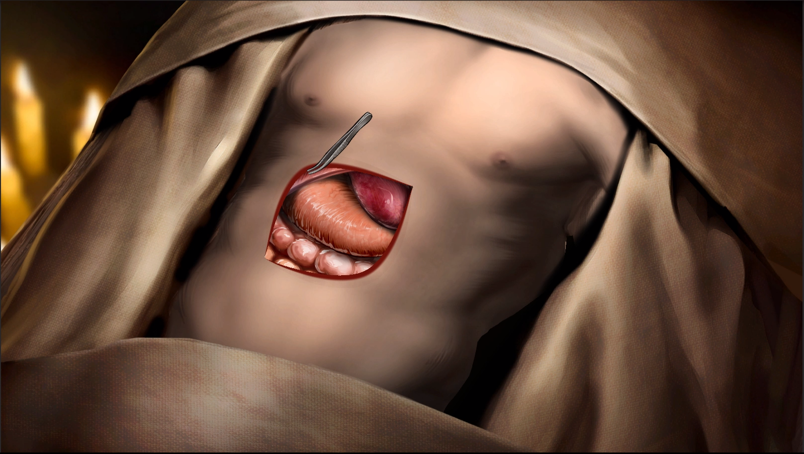

About me
My name is Santiago Fernández Andrés, and I'm a videogame designer, I studied the Game design and development career at ESNE, I chose the branch of design, but I learned on my own to script in C# in Unity and to use the engine, later, I extended that knowledge to GdScript and Godot.
Working experience
Between 2022 and 2023 I was working mainly as a programmer at Dyp Sloom, although being a small team, I also participated as a designer, and sometimes as a tecnical artist. Together we launched Potion Blast on steam.
Between 2023 and 2024 I was hired to work at GGTech in Alicante as a designer, which gradually ended focusing on level designer. I began with them making levels for eWorlds, and later they commissioned us to make maps for several Fortnite events. I also did some technical artist stuff, but not as much as in the previous team.
Personal projects
University degree
During the career we had several subjects in which we were required to make small games in teams, and also each year we had to do a video game project (which I honestly appreciate, because it was how I learned the most, and also enjoyed it a lot, although it also showed us how complicated it was to manage teams).
I think we got to make a total of 13 video games and board games directly from the subjects, not all of them came out, but all of them were somehow useful to learn and experiment.
University projects
Most of the videogames we made in the race were made with a team we formed in the second year called Ashes, which I am very fond of, and in which I would dedicate myself to be a designer and programmer at the same time. We would start making a game called Smash Bros Brawl style fighting game Straight Outta Birbton (probably not the best idea) but it turned out to be a funny game of gangster bird fights.
The videogame of the following year was Constella, a game of sailing with a boat discovering the phases of the loss, and what I learned by force with its development was that changing the vertex displacement of a model does not modify its collision, that although it sounds logical, at that time was not completely clear to me, and made us take a lot of time to have a first working prototype, because of the waves, but I'm happy with the final result.
In that same year we did 2 other projects in subjects, a game composed of rotation minigames with the mouse wheel called Rotato that turned out very well. And Russian roulette inspired card game called You're Dead that reminded us how difficult it is to print colors correctly.


And in fourth year, we had a subject that pushed us to experiment more, which I really appreciate, in which we made 4 games trying uncommon concepts. They are not published, but maybe someday I'll take a look at them in case you can get some of them out, or if they need a little push to publish them.


Hippocratic Oath
The last project, the TFG project, being probably the one that attracted the most attention, but we couldn't release it, was Hippocratic Oath, a visual novel game, but we couldn't get it out was Hippocratic Oath, a visual novel and surgery game set in Victorian times.
Due to the fact that there were several designers in the team, we split up the systems and the historical research. Because of my knowledge of programming, a colleague and I took care of the the design of the surgeries, in which we tried to transmit the crudeness of the situation together with the lack of knowledge, that's why we chose to make mostly all interface and mechanics diegetic, looking for a sense of tension and uncertainty, but leaving some feedback to make clear the critical situations.
In the technical aspect, apart from programming the multiple systems that were designed, it stood out the way of interacting between different layers of a 2D body animated with bones, by using masks that were generated and modified in real time, together with beziers that defined the edges of the opening, hierarchized in such a way that they followed the animations of the model.
Unfortunately we could not finish it because we were running out of time at the university, and each member of the team had different objectives and needs that were incompatible.
 

Jams
Jams are a concept that I like a lot, but I don't quite get the hang of it (partly because I'm too ambitious, or because I'm very indecisive) but I usually have a good time, which is the main objective.
Coincidentally, from the cultura abierta jams we have done, we had good outcomes, the first one was a typer called Aquelarre, and the second one a Papers please style game of censoring artworks, Lienzos de negro, although the last one we submitted it almost out of deadline.


And there are also several jam games that we have not finished, and it is usually because we have overextended, although there was a time when the game broke, just like that, but at least we always had something to learn.
Solo Projects
I've always found it hard to do projects alone or practically on my own, I think part of what pushes me to experiment and express myself is being able to do it with other people I can be comfortable with, but even so, I've managed to get some done.
One of the projects starts with a Mastodon user asking someone to make an application to manage tasks with timer, and for some reason, I felt like doing it, and so was born Cronotareas, a project with which I wanted to experiment with the interfaces and theme tool of Godot.
Another project I did by my own was a videogame gift card for a friend, this is something more personal, so it's not published or anything. In it I used some illustrations that another friend made, to make a digital equivalent to a gift card, with dialogues and interactions.
And finally, this website, although it's not a game, but well, I wanted to have something eye-catching to show my portfolio, and refresh HTML and CSS.
Hobbies
Recently I have become interested in the concept of non-profit collaborative projects, so,
being my predominant space the digital one, I have started to look into open source.
Not only that has led me to start using Linux in my daily life, I have also ended up giving
new opportunities to less popular programs, but it gives me some joy to use them, and probably
what has made me delve deeper into this has been to change Unity with Godot for personal use.
Coming closer to the present, I have been able to recover my old 3D printer, a BQ Hephestos,
which is a type of tool that has always attracted my attention for its ability to democratize
the creation of objects accurately, and on top of being able to be sustainable.
Mine requires some maintenance for being old, but still I think it is a hobby that is worthwhile.
Another of my hobbies is skiing, I haven't been able to go/dedicate time to it for a while, because I've been focused on college, work, or whatever concern I had, but I've been going since I was 10 years old, and I should drop by a little more when I can.